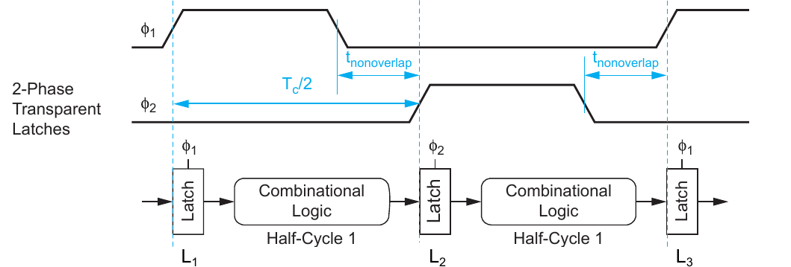

2.4 Pulsed Latch#
The pulsed latch pipeline operates similarly to a flip-flop-based system. However, instead of sampling data at the rising edge of the clock, a brief pulse of width \(t_{pw}\) is applied to a latch each cycle. This pulse samples the current input and holds it for the remainder of the clock cycle. Again, data tokens advance through the pipeline stages one clock cycle at a time, as illustrated in the figure below.
{kind=link}

Figure 2.4: Pulsed Latches [3]
Timing Constraints#
Max-Delay. For the max-delay constraint concerning pulsed latches, we need to make a distinction between the following cases. If the setup time \(t_{setup}\) is larger than the pulsewidth \(t_{pw}\), arriving data must setup some time (\(t_{setup} - t_{pw}\)) before the rising clock edge. Resulting in the following constraint:
If the setup time is smaller than the pulsewidth, it does not need to be taken into account. The clock period \(T_c\) must simply offer enough time for data to travel through the latch and the combinational logic:
If we combine these two cases, we need to take the maximum of both:
Min-Delay. The min-delay constraint for pulsed latches is expressed in Equation below. After data being launched from \(L_1\) at the rising clock edge, it must not arrive at the subsequent latch \(L_2\) until the hold time of the falling edge has passed. Compared to the flip-flop based pipelines, the additional pulse width delays the hold time window that has to be met: